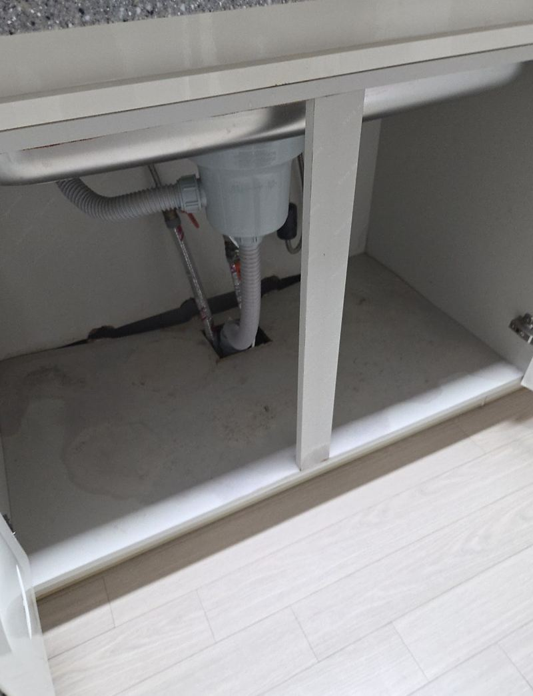
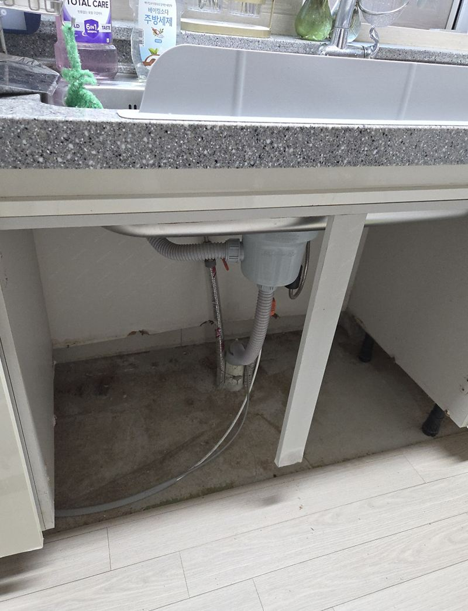
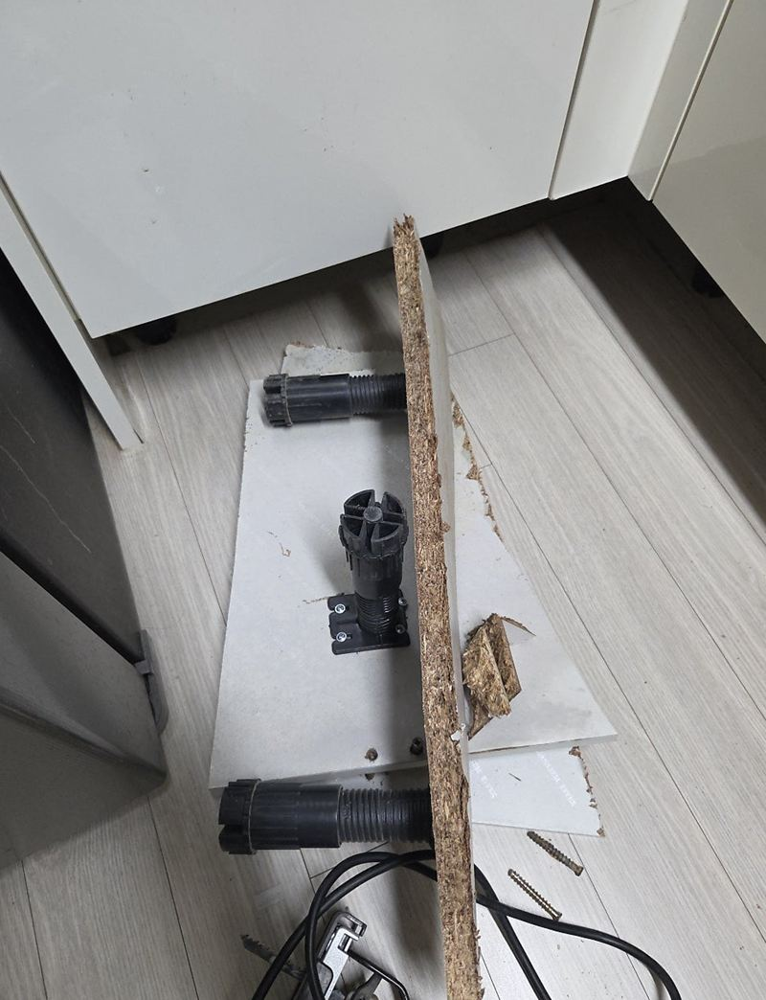
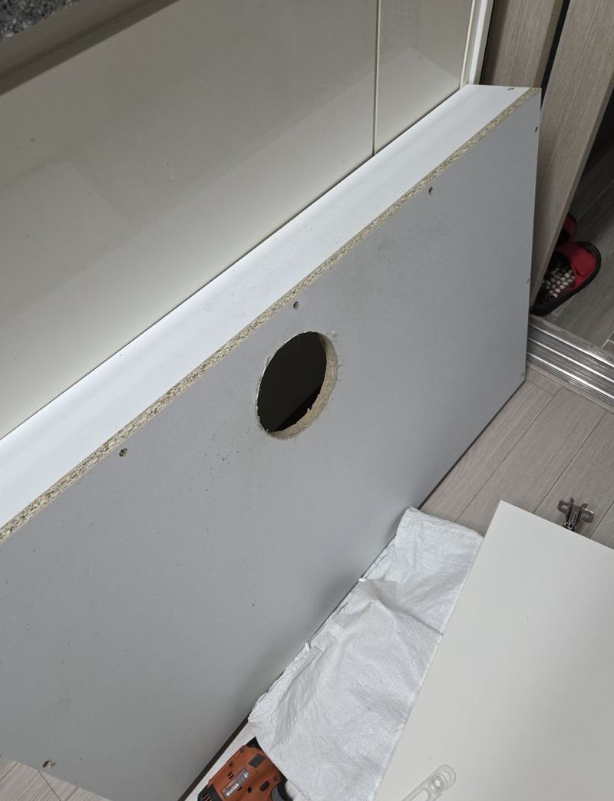
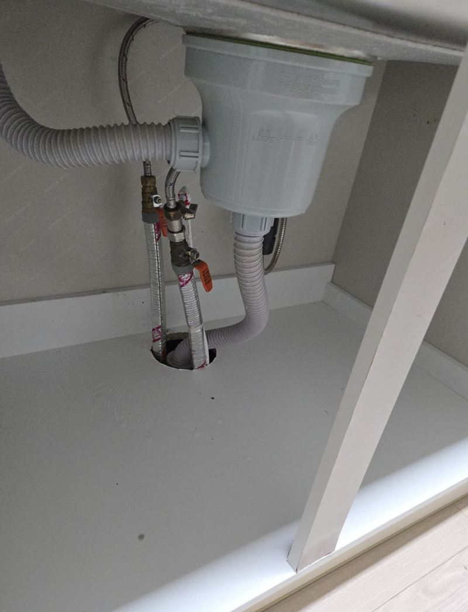
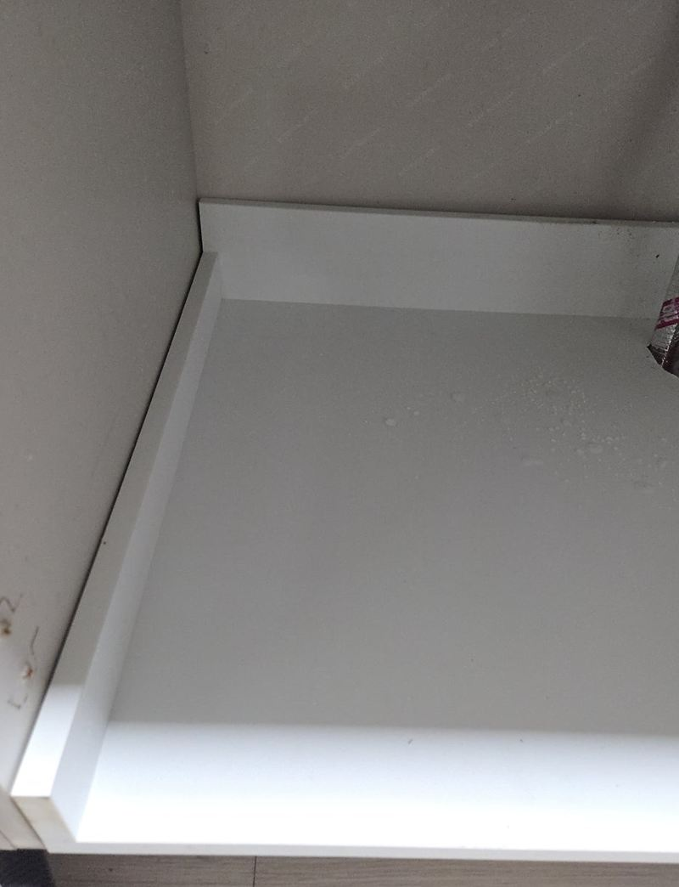

고양 싱크대 하부장 밑판 썩음, 교체 방법
← 밀어서 전후 비교 →
"싱크대 밑이 젖은 뒤로 판이 푹 꺼졌어요. 물건 넣기도 불안한데, 전체를 안 바꾸고 밑판만 고칠 수 있을까요?" 문을 열어 보니 바닥판이 부풀어 가운데가 내려앉아 있었어요. 싱크대는 그대로 두고, 상한 밑판만 걷어 배관 자리에 맞춰 자른 새 판을 넣었어요.
| 현장 | 고양 덕양구 고양동 빌라 주방 |
|---|---|
| 상태 | 하부장 바닥판 부풀음·내려앉음, 뒷판 고정 약함 |
| 한 일 | 물먹은 범위 확인 → 밑판 철거 → 치수·배관 위치 실측 → 새 판 재단·타공 → 고정 |
| 살린 것 | 싱크대 상판, 문짝, 옆판 |
밑판을 갈기 전에 본 네 가지
| 확인할 것 | 이유 |
|---|---|
| 물먹은 범위 | 밑판만인지, 옆판·뒷판까지인지 |
| 뒷판 상태 | 새 판을 단단히 걸 수 있는지 |
| 배수관 위치 | 새 판에 낼 구멍 위치와 크기 |
| 다릿발 위치 | 수평과 무게 받침 |
문을 닫으면 안 보이는 곳이라 물기가 오래 남기 쉬워요. 겉만 닦기보다 판이 무게를 버틸 수 있는지를 먼저 봤어요.
밑판만 걷어 내기
옆판과 뒷판, 배수구 주변을 건드리지 않게 상한 밑판만 조각내어 꺼냈어요. 무리하게 뜯으면 옆 장까지 흔들리고 새 판이 잘 맞지 않아요.


배관 자리에 맞춰 새 판 넣기
안쪽 폭과 깊이를 재고, 배수관이 지나갈 자리를 표시해 새 판에 구멍을 뚫었어요. 구멍이 너무 크면 벌레와 냄새가 올라오고, 작으면 배관을 억지로 꺾어야 해요. 판을 넣은 뒤 아래를 받쳐 단단히 고정하고, 물건을 올려 꺼짐이 없는지 확인했어요.




하부장 바닥, 이럴 때 손보세요
- 바닥이 물결처럼 울퉁불퉁해요판이 물을 먹고 부푼 거예요.
- 무거운 냄비를 넣으면 가운데가 꺼져요판의 힘이 빠졌어요.
- 퀴퀴한 냄새가 나요젖은 판 속에 곰팡이가 생겼을 수 있어요.
- 배수관 둘레가 젖어 있어요새는 곳부터 막아야 새 판도 오래가요.
밑판 교체가 맞는 경우와 아닌 경우
- 밑판만 젖었어요이 현장처럼 바닥판만 바꾸면 돼요.
- 옆판 아래까지 부풀었어요옆판 보강이나 하부장 교체를 같이 봐요.
- 싱크대가 전체적으로 낡았어요밑판만 바꾸기보다 전체 교체가 나을 수 있어요.
싱크대 밑판 교체 질문
밑판에 판만 덧대면 안 되나요?
젖은 판 위에 덧대면 아래에서 계속 썩고 냄새가 나요. 걷어 내고 바꾸는 게 맞아요.
새 판은 물에 강한가요?
쓰임에 맞는 판재로 넣고, 원하시면 방수 처리를 더할 수 있어요.
문짝도 부풀었는데 같이 되나요?
문짝 아래가 부풀었다면 문짝 교체를 같이 볼 수 있어요.
작업 시간 동안 주방을 쓸 수 있나요?
하부장만 비우면 되고 싱크대는 거의 바로 다시 쓸 수 있어요.
배관에서 물이 새고 있으면요?
새는 연결부를 먼저 손보고 판을 넣어요.
여러 칸이 다 상했으면요?
칸 수와 상태를 보고 부분 교체와 전체 교체를 비교해 드려요.
밑판 교체 후 바로 물건을 넣어도 되나요?
고정이 끝나면 바로 넣으셔도 돼요.
밑판 교체 비용은 무엇으로 정해지나요?
칸 크기, 배관 타공 개수, 뒷판 보강 여부에 따라 달라요. 하부장 안쪽 사진이면 대략 말씀드릴 수 있어요.
빌라 싱크대도 같은 방식인가요?
네, 아파트·빌라·오피스텔 모두 같은 방식으로 바꿔요.
다른 싱크대·수납장 현장
하부장 문을 열고 바닥과 배관 쪽을 찍어 보내 주세요.
전화 상담 010-4517-9872